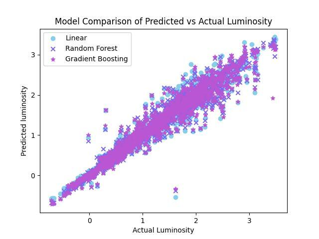
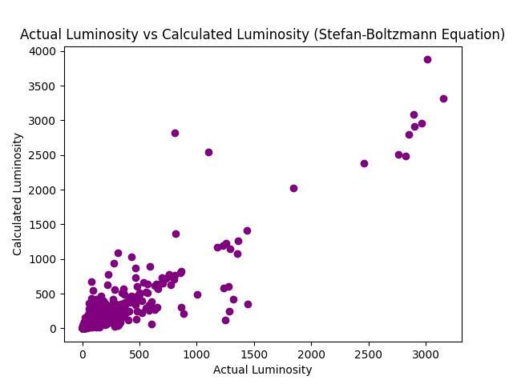
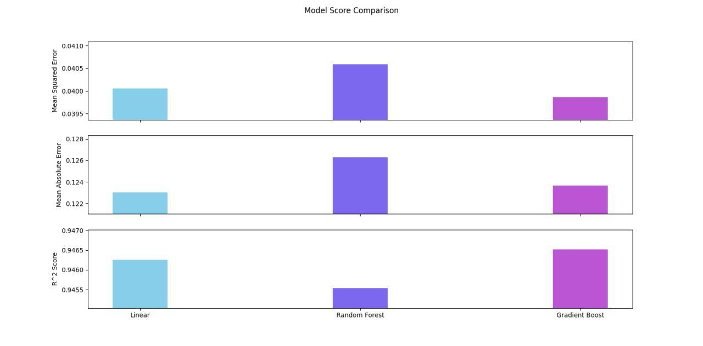

Applied machine learning to Gaia DR3 stellar data to probe the log-linear luminosity–temperature–radius relationship, validating data-driven predictions against the Stefan-Boltzmann Law.
Stellar luminosity is a fundamental quantity in astrophysics, but directly measuring it for large numbers of stars requires extensive observational resources. This project investigates whether machine learning models can accurately predict stellar luminosity from two more readily available stellar parameters i.e, effective temperature and radius, and whether the predictions align with the theoretical relationship established by the Stefan-Boltzmann Law.
The Stefan-Boltzmann Law predicts that stellar luminosity scales as L ∝ R²T⁴, a relationship that holds precisely only for ideal blackbodies. This project asks: how well do data-driven models trained purely on observed Gaia parameters recover this theoretical relationship?
Stellar parameters (T_eff, R, L) were drawn from the Gaia DR3 catalogue. A log-transformation was applied to all three quantities, linearizing the Stefan-Boltzmann power-law and placing the analysis in the same mathematical space as the theoretical prediction. Three regression models of increasing complexity (Linear Regression, Random Forest, and Gradient Boosting) were trained on log(T_eff) and log(R) to predict log(L), allowing a direct assessment of how much predictive power is already encoded in the simplest physically-motivated model. Predicted luminosities were cross-validated against both the Gaia Flame pipeline luminosities and Stefan-Boltzmann theoretical values computed from first principles.